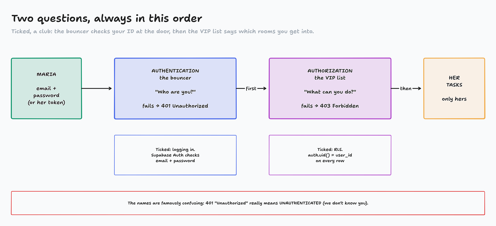
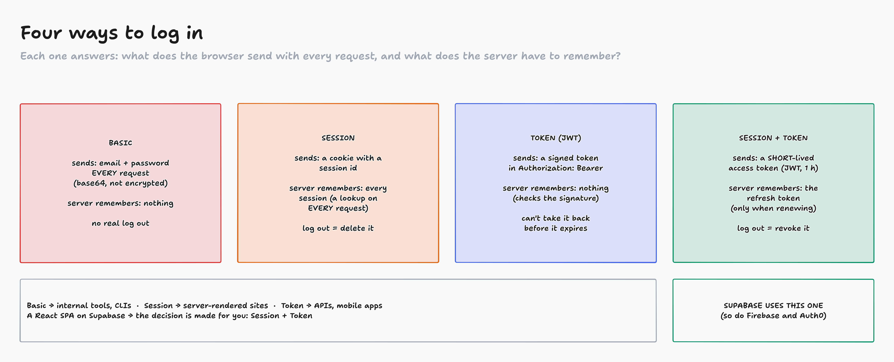
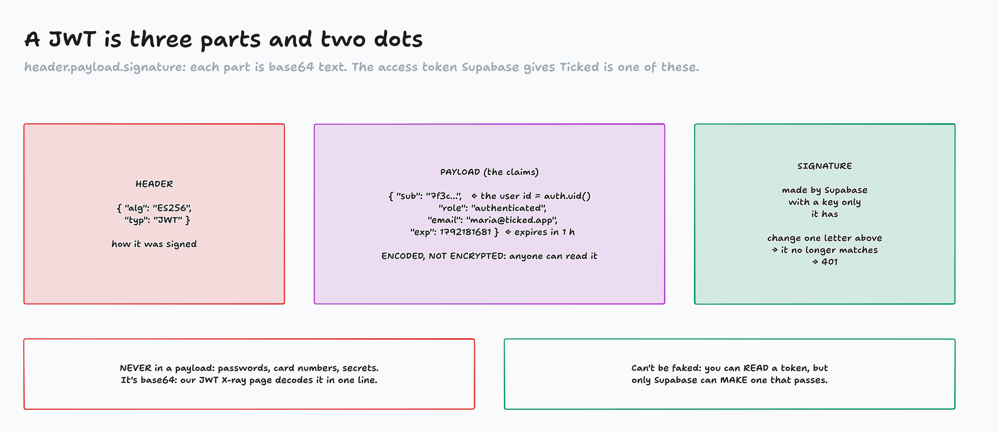
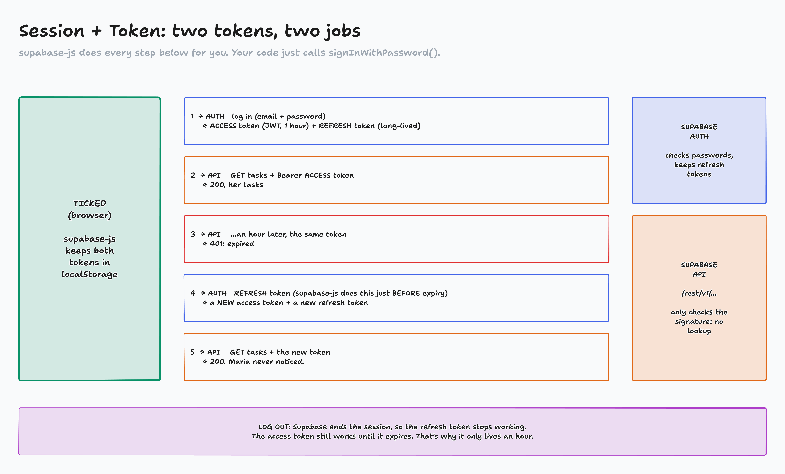
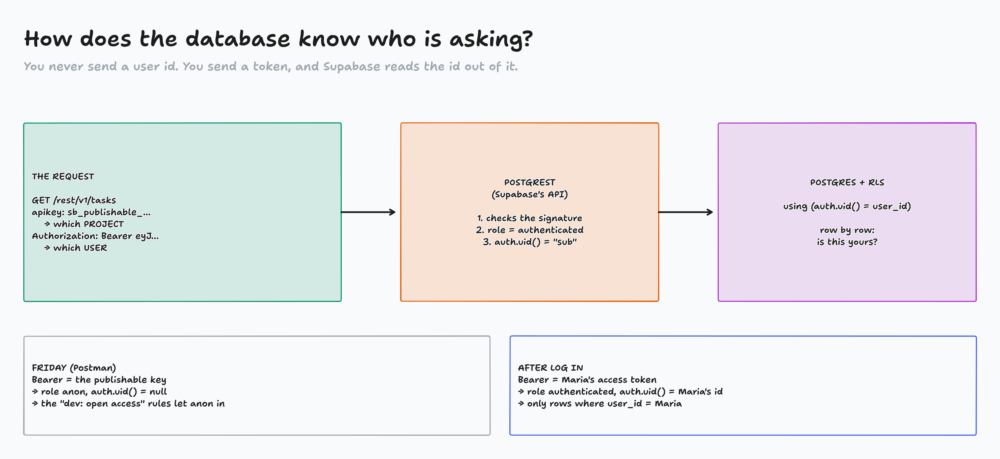

Building Applications · Authentication · Part 1 of 2
How authentication works
Who are you, and what are you allowed to do? Ticked can't answer either question yet.
Ticked is an open house
- The publishable key ships to every browser
- With it, anyone can read every task, and every user's email
- …and change or delete any of them
Today: how apps know who you are. Next lecture: Ticked learns it.

diagrams/AU1-01-bouncer.tldr
401 or 403?
| Authentication | Authorization |
|---|
| Question | Who are you? | What can you do? |
| Happens | first | second |
| Fails with | 401 Unauthorized | 403 Forbidden |
| Ticked example | logging in with email + password | may I delete this task? |
401 "Unauthorized" really means unauthenticated. Everyone finds that confusing.
Activity: Bouncer or VIP list?
- A situation in Ticked appears
- In chat on "go": AUTHENTICATION, AUTHORIZATION or ALLOWED
- Bonus: which status code?
Page: activity-bouncer-or-vip/

diagrams/AU1-02-four-types.tldr
Which one fits?
| If your app is… | Consider… |
|---|
| a simple internal tool or CLI | Basic |
| a server-rendered site | Session |
| an API, a mobile app, many servers | Token |
| needs a real log out | Session + Token |
| a React SPA on Supabase (Ticked!) | what Supabase gives you: Session + Token |
The decision is made for us. Our job: understand it well enough to check Claude's work.

diagrams/AU1-03-jwt.tldr

diagrams/AU1-04-refresh.tldr
Live: log in with Postman, then read the token
| Request (collection "Ticked Auth") | Bearer | Expect |
|---|
POST {{base_url}}/auth/v1/signup | none (apikey only) | 200 + access_token, refresh_token |
| paste the access token into the JWT X-ray | sub, role: authenticated, exp |
GET {{base_url}}/rest/v1/tasks | publishable key (Friday) | 200, every task |
GET {{base_url}}/rest/v1/tasks | the access token | 200 [ ] ?! |
POST {{base_url}}/rest/v1/tasks | the access token | 403 |
Logged in, and you see less than a stranger. Why?

diagrams/AU1-05-who-is-asking.tldr
What you now know
- Authentication (who? 401) comes before authorization (what? 403)
- Supabase = Session + Token: a 1-hour access token (JWT) + a revocable refresh token
- A JWT is readable by anyone, fakeable by no one
- The token rides in
Authorization: Bearer; Postgres sees it as auth.uid()
Next lecture: back up, rebuild the tables for logins, and Claude builds Register, Log in and Log out.
Homework, Part I
- Priority 1, How Authentication Works peer quiz: on the curriculum's Assignments page
- Priority 2, FreeCodeCamp: 50 steps of the Python certification
Try it on your own project
Postman → POST /auth/v1/signup against your Supabase project. Decode the token in the JWT X-ray. Then delete the test user.